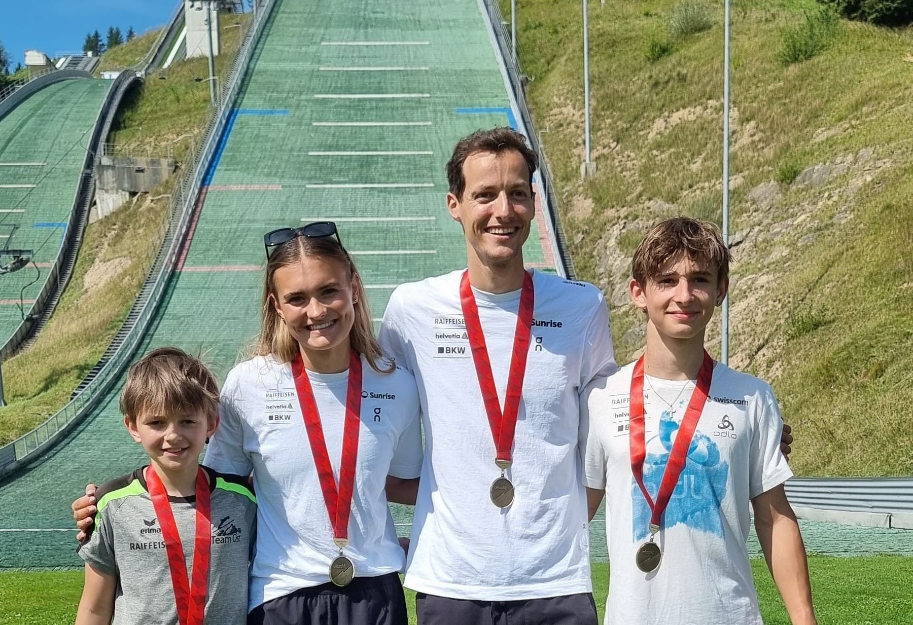

2023/24
- 72. Rang Alpen Cup Kandersteg
- 73. Rang Alpen Cup Kandersteg
- 73. Rang Alpen Cup Planica
- 67. Rang Alpen Cup Planica
2024/25
- 45. Rang Alpen Cup Oberhof
- 59. Rang Alpen Cup Oberhof
- 79. Rang Fis Cup Oberhof
- 78. Rang Fis Cup Oberhof
- 77. Rang Alpen Cup Seefeld
- 58. Rang Fis Cup Kandersteg
- 35. Rang Alpen Cup Oberwiesenthal
- 47. Rang Alpen Cup Liberec
- 52. Rang Alpen Cup Liberec
- 49. Rang Alpen Cup Hinterzarten
- 67. Rang Alpen Cup Hinterzarten
2025/26
- 7. Rang Team JWM Lillehammer
- 34. Rang JWM Lillehammer
- 12. Rang Alpen Cup Zakopane
- 14. Rang Alpen Cup Zakopane
- 59. Rang Continental Cup Lillehammer
- 55. Rang Continental Cup Lillehammer
- 18. Rang Alpen Cup Kranj
- 17. Rang Alpen Cup Kranj
- 5. Rang Alpen Cup Chaux-Neuve
- 55. Rang Continental Cup Engelberg
- 44. Rang Continental Cup Engelberg
- 18. Rang Alpen Cup Seefeld
- 58. Rang Alpen Cup Seefeld
- 20. Rang Fis Cup Kandersteg
- 19. Rang Fis Cup Kandersteg
- 27. Rang Alpen Cup Einsiedeln
- 40. Rang Alpen Cup Einsiedeln
- 23. Rang Alpen Cup Oberstdorf
- 25. Rang Alpen Cup Oberstdorf
- 50. Rang Fis Cup Einsiedeln